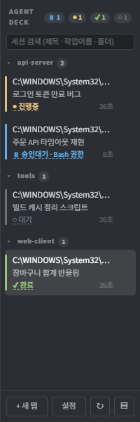
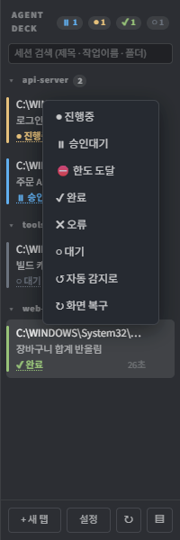
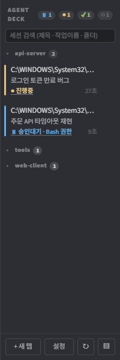
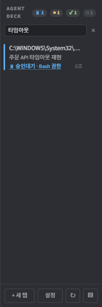
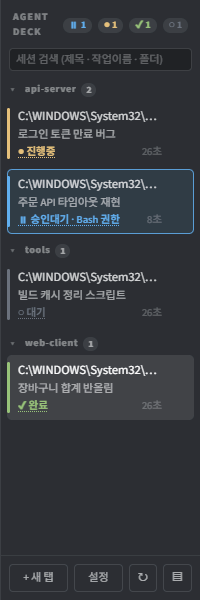
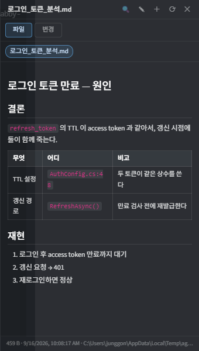
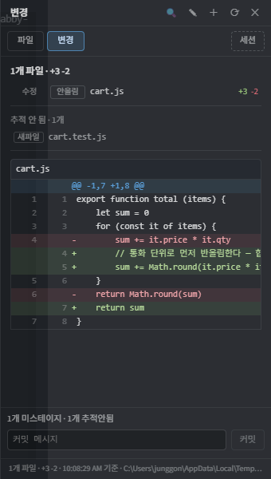
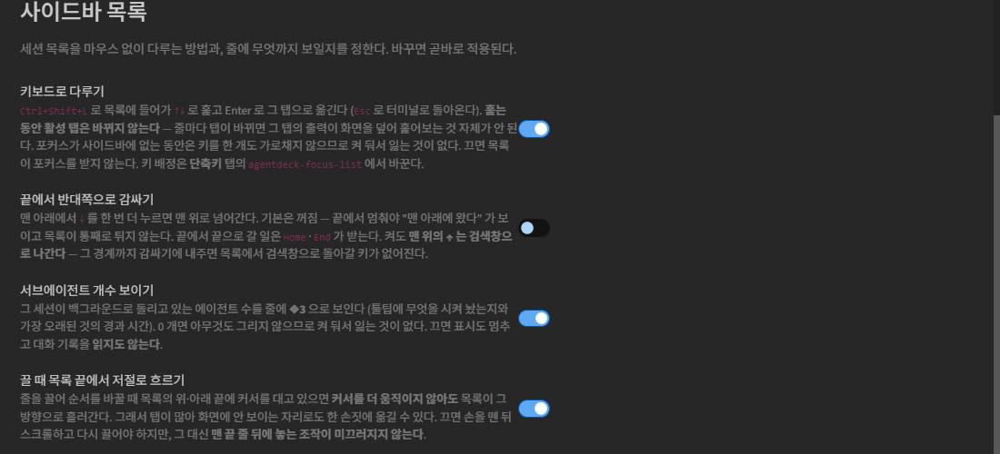

A tool for running several agent CLIs (Claude Code · Codex · Gemini) in one terminal and seeing, at a glance, which session is doing what and which one is waiting for you. Every screenshot in this guide is a capture of the real thing.
The screen is in two parts. The terminal on one side, the session list (sidebar) on the other. Tabby's own tab bar is hidden and this sidebar manages tabs instead — once you have several tabs open, a horizontal tab bar has no room to say what each one is working on.

⏸1 ●1 ✔1 ○1 at the right of a header is the per-status count.
Each session reports one of six states.
| Badge | Meaning | When |
|---|---|---|
| ● running | the agent is working | output keeps coming |
| ⏸ waiting | it is waiting for you | asking permission to use a tool |
| ⛔ rate limited | usage limit hit | shown with the reset time |
| ✔ done | the turn finished | answered and stopped |
| ✘ error | it failed | an error message appeared |
| ○ idle | nothing is happening | no output for a while |
A waiting badge says what it is waiting for. The second row in the screenshot above reads
⏸ waiting · Claude needs your permission to use Bash.
When you come back from doing something else, you know which session stopped and why without clicking into it.

back to auto hands it back to detection.
Sessions are grouped by working folder (project) — api-server,
tools and web-client in the screenshot above. The number next to a header
is how many sessions are in that group. Click the header to collapse it.

tools and web-client are collapsed. Collapsed state survives a restart.cd in the shell does not move a
session to another group. If membership shifted while a session was alive you would keep asking
"where did that row just go". When there is only one group the header is not drawn at all, so a
single-project setup looks exactly as it did before.
Type in the search box at the top of the sidebar to narrow by title · task name · working folder
at once. Click a status chip (⏸1 ●1 …) to keep only that status.

✕ clears it.Ctrl+L moves focus into the list so you can look through it without the mouse.
| Key | What it does |
|---|---|
| ↑ ↓ | move between rows. The active tab does not change |
| Home End | first row / last row |
| Enter | switch to that session. On a group header, collapse or expand |
| Esc | if a search or filter is set, clear that first. Otherwise return to the terminal |
| Tab | go to the search box |

Sessions use slots 1–9. Vacant slots are reused; filtering and closing other sessions never renumber them. Automatic sorting and drag reordering are disabled.
Session communication MCP uses actual session IDs only.
Read the documents, images, tables and code an agent produced right next to the terminal. File paths printed on screen are picked up automatically, so you never have to ask for a file to be opened.

| What | How |
|---|---|
| Drag and drop | Drop a file on the panel and it opens. Drop it on the terminal and you are asked — open in panel / paste the path |
| Edit and save | ✎ to edit, Ctrl+S to save. BOM and line endings are restored exactly as they were |
| Find | Ctrl+F |
| New file | Put a path that does not exist into ＋ and press Enter twice — it is created and opened for editing |
| Open it after working with it closed | Everything touched so far is waiting as chips and the body shows the most recent file (if you were on Changes, the diff is re-read) — Settings → Preview panel → preload into the panel (on by default) |
| Make it open by itself | Settings → Preview panel → open the panel automatically (off by default — opening and closing is yours to do). Turn preload off and nothing happens automatically |
The Changes tab of the same panel shows git diff for that session's working folder.
It does not care who made the change — agent or human, you are looking at the working tree itself.

2 files · +192 -16 at the top, then the file list (including six untracked new files),
then the diff with line numbers. The commit message box is at the bottom.
| What | How |
|---|---|
| Stage | Click the tag at the left of a file to git add or unstage it |
| Commit | Write a message and press commit — it takes two presses (the first one asks to confirm) |
file:line reference | Click a diff line and that position is typed into the terminal. Shift+click for a range |
While composing text with an IME (Korean, Japanese, Chinese), pressing Home, End or Shift+Enter used to make the syllable still being composed follow the cursor or drop onto the new line. Keys are now held until composition finishes.
| Key | What it does |
|---|---|
| Ctrl+Enter · Shift+Enter | newline (next line without sending) |
| Ctrl+V | paste. If the clipboard holds only an image, it is pasted as an image |
| Right-click | copy when there is a selection, paste when there is not. Hold for the menu |
Sidebar settings button → the AgentDeck section.

The ones actually worth touching:
| Entry | Default | Meaning |
|---|---|---|
| keyboard control | on | Ctrl+L list navigation |
| wrap around at the ends | off | ↓ at the bottom jumps to the top |
| show subagent count | on | ❖3 on the row |
| auto-scroll while dragging | on | the list scrolls at the edges |
| group by project | on | session groups |
| sort by status | off | most urgent first (blocks manual reordering) |
| show elapsed time | on | 2m at the right of a row |
❖3) is how many background agents that session is running.
It is counted by matching what was launched against what finished in the transcript, so it is
right even when no hook is reporting. Hover the row to see what is running and how long the oldest has been going.
| Key | What it does |
|---|---|
| Ctrl+T | new tab in the work root (replaces Tabby's own new-tab) |
| Ctrl+1 … 9 | select fixed session slot 1–9 |
| Ctrl+L | focus the session list / same key returns to the terminal — then ↑↓ walk, Enter picks, Esc leaves |
| Ctrl+W | close the current tab (the focused row when the list has the keyboard) |
| Ctrl+O | open / close the preview panel |
| Ctrl+R | screen repair (same as ↻; replaces Tabby's rename-tab — rename by double-clicking the row) |
| Ctrl+S · Ctrl+D | split the pane side by side / top-bottom (Tabby's own) |
| Ctrl+Q | close the focused split pane (Tabby's own close-pane, filled in while unbound) |
| Ctrl+Enter · Shift+Enter | newline |
| Ctrl+V | paste (images included) |
| Right-click | copy with a selection, paste without one; hold for the context menu |
| Ctrl+F | find inside the preview panel |
| Ctrl+S | save while editing in the panel |
Two actions ship unbound — agentdeck-toggle (sidebar / 4:3 on-off) and
agentdeck-view-mode (Files ↔ Changes).
Change any key under Settings → AgentDeck → Shortcuts — a key Tabby or AgentDeck already uses is flagged before it is applied. Tabby settings → Hotkeys (agentdeck-) works too.
If a TUI looks broken, press ↻ in the sidebar (or right-click a row → repair screen).
It clears the input-line remnant and has the app redraw. Turning on auto repair in settings
detects the breakage and handles it for you.
Settings → Report a problem → collect builds a zip of diagnostics
— version, environment, settings and recorded exceptions.
Terminal contents are left out by default: that file would carry your code verbatim,
so it is only included when you explicitly turn it on.
Attach the zip to a
GitHub issue.
Tabby 1.0.235 has a problem tangled up with restoring previous tabs. Turning on do not restore tabs on startup in settings fixes it — only the shell is restored anyway, and the agent session inside it is already dead, so there is nothing to lose.